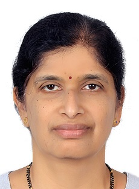

Strategic guidance for early-stage VLSI and chip startups using AI to rethink memory, power, and compute efficiency — from someone who has been inside 40+ IPs across Qualcomm and Intel for 20 years.
NUM — which stands for Network · Unblock · Mentor — is an advisory practice for hardware founders and engineering leads who need a trusted thinking partner, not a hands-on contractor.
Bring 20 years of Qualcomm and Intel relationships to your doorstep — EDA vendors, chip ecosystem contacts, domain experts — and help you build your own lasting network in the hardware world.
Bring an outside perspective to stuck problems: coverage closure debates, post-silicon triage strategies, toolchain transitions, or stakeholder alignment friction.
Work with your engineering leads on systems thinking, long-range planning, team structure, and the judgment calls that don't show up in any playbook.
NUM advisory is a fit if any of these describes your situation.
You're building custom silicon and using AI to accelerate design, verification, or tapeout — and you're not sure which parts of the legacy methodology you can safely skip.
Your product lives or dies on memory bandwidth, power envelope, or compute density — and you need a verification strategy that catches efficiency regressions early.
You're integrating third-party or legacy IPs into your SoC and want an experienced eye on the quality gaps before they become tapeout blockers.
Your team is strong on algorithms or architecture but lighter on end-to-end chip delivery experience — and you want a thinking partner who has shipped silicon at scale.
You're in the cellular stack and need someone who understands IJTAG, JTAG, AMBA/AXI, and MIPI from real program execution — not textbook familiarity.
You're growing your design verification team and want guidance on onboarding structure, shared infrastructure, and how to preserve quality as the team expands.
These are the areas where 20+ years of hands-on chip delivery translate into strategic value for early-stage teams.
Defining what "done" means for verification — coverage models, acceptance thresholds, backward-compatibility testing, and the difference between coverage that's measurable and coverage that matters.
Practical guidance on integrating AI tools into simulation, log analysis, and error triage. Equally important: identifying which legacy verification disciplines AI cannot safely replace.
Memory bandwidth constraints and power domain coverage gaps are the two most common late-stage tapeout surprises. Advisory on catching them at the IP level.
OKR-to-execution translation, milestone tracking, post-silicon traceability, vendor and EDA partner management — the operational scaffolding that keeps hardware programs on schedule.
Evaluation frameworks for simulation tools (VCS, QuestaSim, Xcelium), DFT toolchains (Tessent ICL-PDL), and transitioning from proprietary to industry-standard flows without disruption.
Shared infrastructure design, cross-site onboarding programs, and building a team culture where quality and delivery are not in permanent tension.

I spent 12 years at Qualcomm in San Diego working on the MSM modem series — from conception through post-silicon, across 2G, 2.5G, 3G, and early 4G wireless standards. I owned IPs end to end: architecting, designing, coding, verifying, and documenting. I demonstrated live modem IPs to high-stakes customers in real-time lab environments.
Then 7 years at Intel in Bangalore, running IP programs for 9+ concurrent SoCs across Xeon server and Core Ultra client families. I was simultaneously a Design Verification Engineering Manager and a Program Manager — the dual role gave me a rare view of how technical decisions and business decisions interact under delivery pressure.
At Intel I also piloted AI-assisted workflows in verification: log summarisation, error extraction, action-item capture. I learned what AI accelerates (triage, pattern recognition, repetitive analysis), what it fails at (judgment calls, unspecified corner cases), and how to build the governance discipline that makes AI adoption auditable.
I hold an M.S. in Electrical Engineering from Virginia Tech and a B.Tech from IIT Bombay. I received the President of India Gold Medal at the National Physics Olympiad and the NTSE National Scholarship.
NUM is how I work now: strategic conversations with founders and engineering leads who are building something genuinely hard in hardware, and who want a thinking partner with deep domain roots.
If you're an early-stage chip team using AI to reshape hardware design — for memory, power, compute, or beyond — I'd like to understand the problem. No pitch deck required.
num@malamasti.com